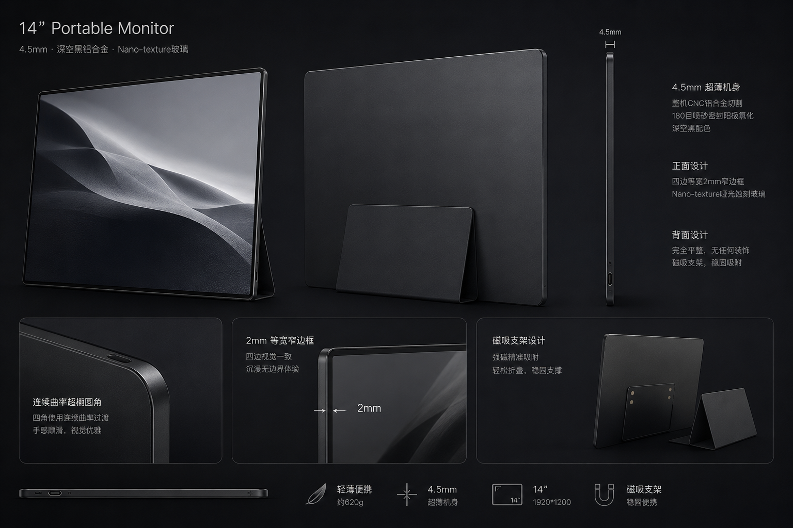
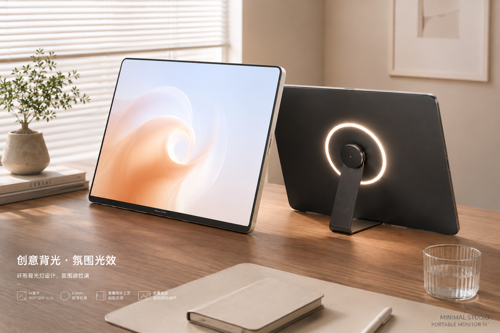
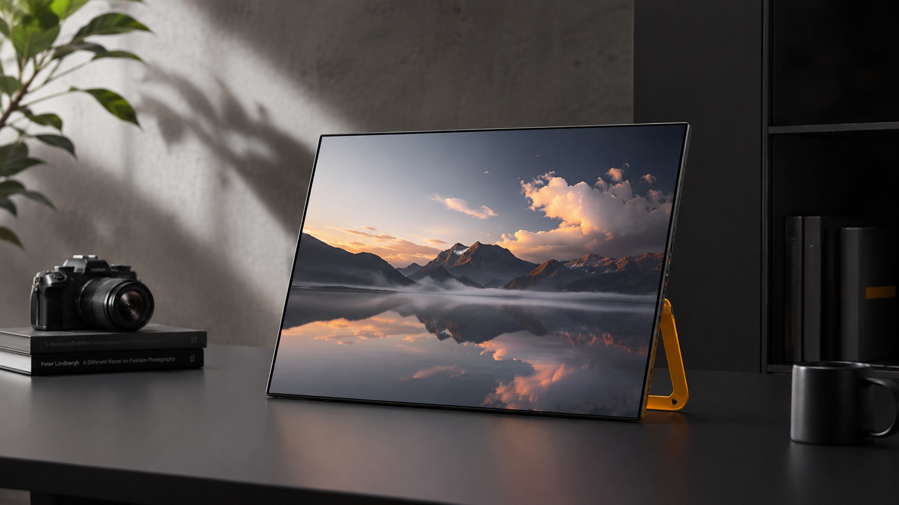
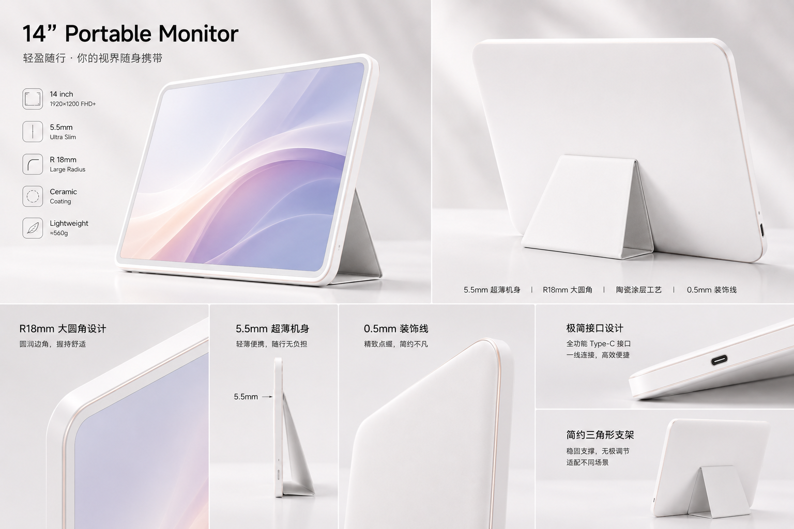
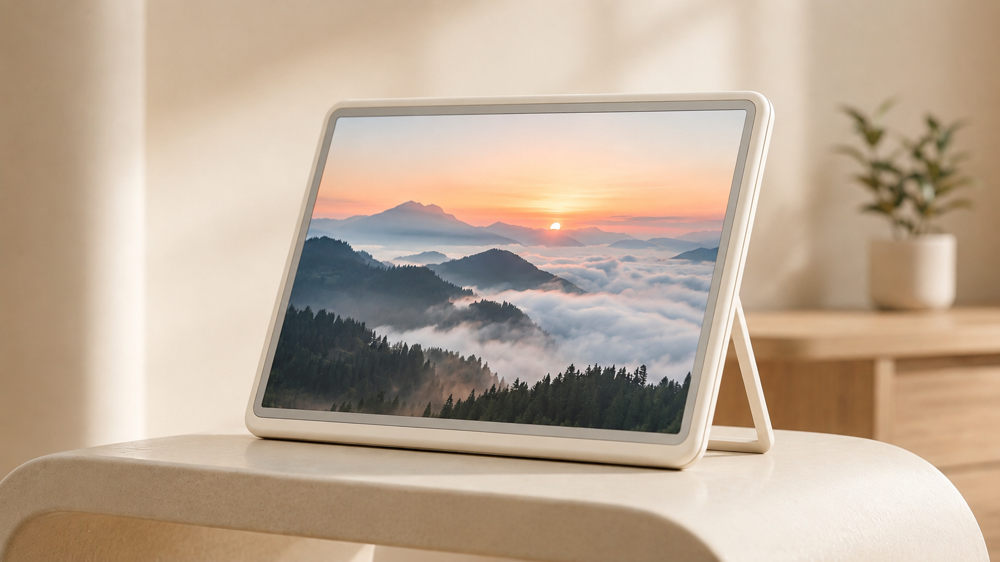
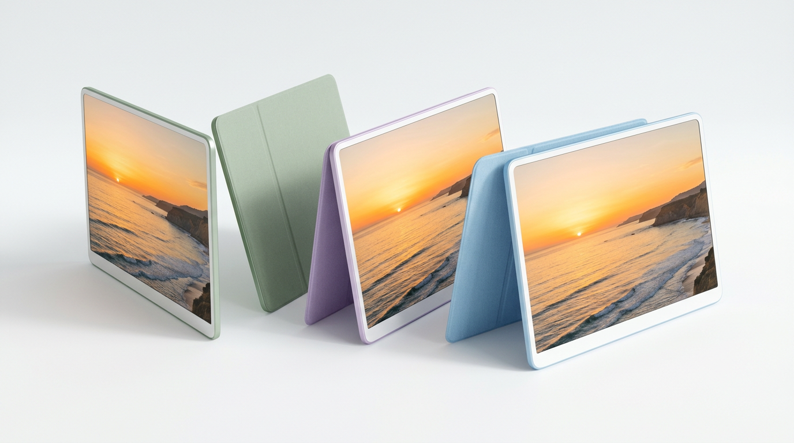
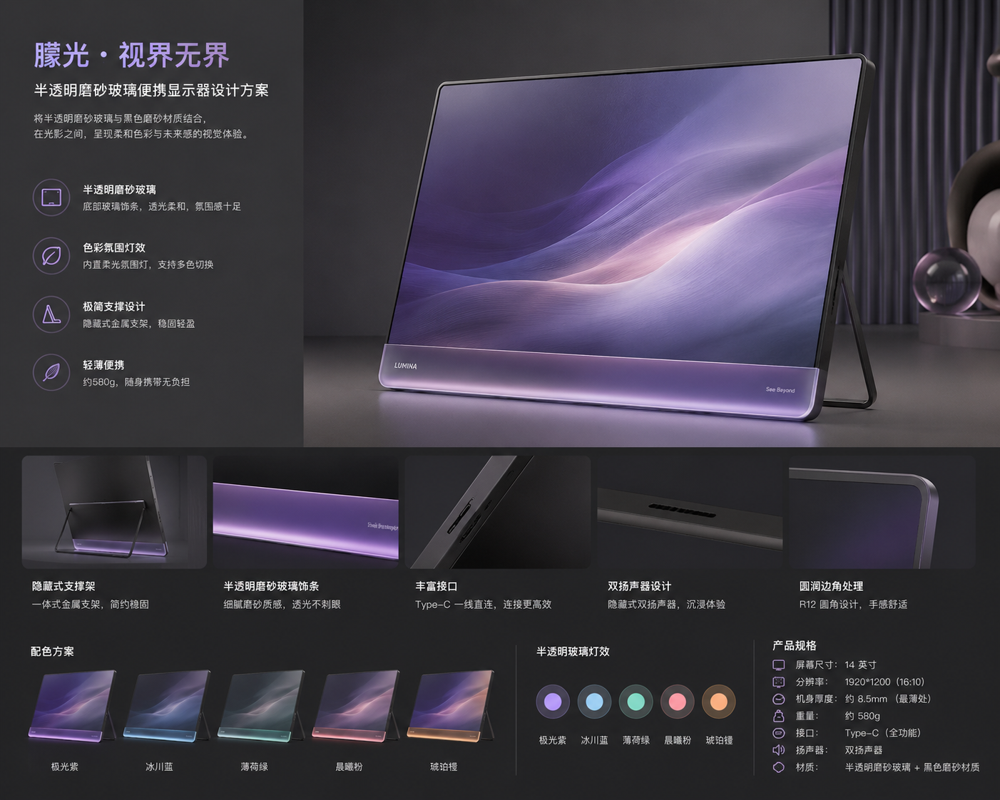
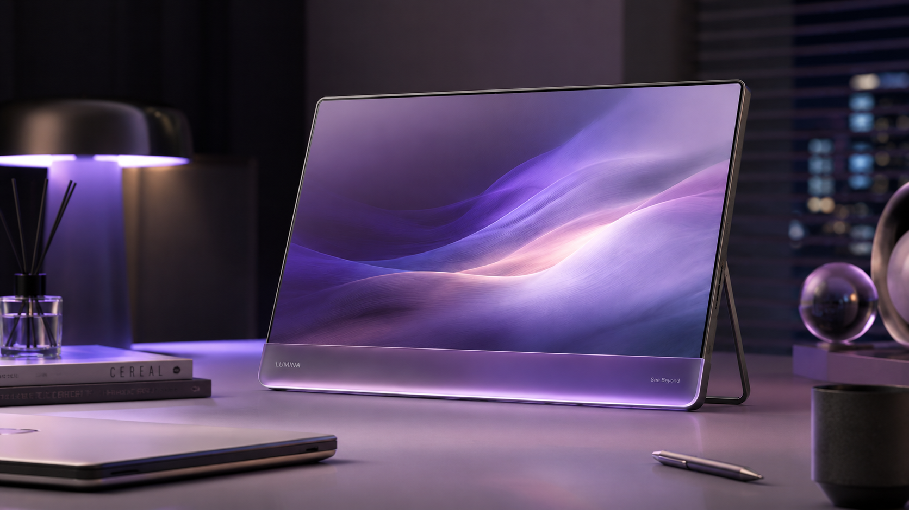

一、市场概览
13-14寸便携显示器正从"笔记本扩展配件"进化为独立的"随身生产力工具"品类。OLED面板降本使3-5mm厚度成为现实，磁吸生态从手机向生产力设备蔓延。在工业设计层面，市场呈现高度同质化——90%的产品是"深色铝合金矩形板"，造型语言和CMF策略缺乏差异化，留出了清晰的设计机会空间。
二、市场产品工业设计拆解
2.1 代表性产品一览

造型：纯平板形态，正面2.5D微弧玻璃，背面完全平整铝板。零装饰，零按键外露。
线条：直线为主，四角R3-4mm紧凑圆角。侧面平直无倒角。
标志性细节：6H双层玻璃与铝壳的齐平接缝；背面仅一枚激光蚀刻logo。

造型：楔形截面——底厚顶薄的渐消式收边，视觉显薄。
线条：四角R5mm圆角，边框与面板交接有0.8mm CNC钻石切割亮边（ASUS标志性做法），形成连续的反光装饰线。
标志性细节：底部内嵌1/4"三脚架孔；背面同心圆拉丝纹理。

造型：纯粹的薄板形态，楔形收边从12mm渐消至4.4mm。一体翻折金属支架嵌入背面。
线条：直线硬朗，R3mm紧凑圆角。无任何装饰线条，纯商务克制。
标志性细节：左右对称USB-C（"双手通用"）；收纳后支架与机身齐平无突出。

造型：薄平板形态，刻意与gram笔记本视觉统一——边框宽度、圆角半径、银色调完全匹配。
线条：R5mm圆润圆角，边缘微弧过渡（非平直切边）。整体语言偏"柔"。
标志性细节：16:10生产力比例；Folio Cover磁吸保护套形成双角度支撑。

造型：15.6"纤薄OLED平板，均匀厚度无楔形。三面窄边框+底部稍宽下巴。
线条：R4mm标准圆角，侧面平直。背面中上部有横向分割线分区（上方为logo区、下方为散热微孔区）。
标志性细节：背面大面积深色拉丝铝+底部一条磁吸Cover定位线。

造型：当前物理极限的"刀锋"形态——3mm均匀厚度，侧面看近乎二维。
线条：R3mm极小圆角，四边完全平直。一块铝板+一块玻璃的极简两件式结构。
标志性细节：侧视图"一条线"的戏剧性薄度；全金属CNC一体成型无拼缝。
2.2 关键参数对比
| 产品 | 厚度 | 重量 | 材质 | 边缘处理 | 圆角 | 配色 |
|---|---|---|---|---|---|---|
| Espresso V2 13" | 5.3mm均匀 | 680g | 航空铝一体CNC | 平直切边 | R3-4mm | 深空灰/银 |
| ASUS MQ16AH | 5-9mm楔形 | 650g | 铝合金+塑料 | 钻石切割亮边 | R5mm | 黑 |
| Lenovo M14 | 4.4-12mm楔形 | 570g | 工程塑料磨砂 | 圆弧过渡 | R3mm | 乌鸦黑 |
| LG gram +view | 8.3mm均匀 | 670g | 铝+PC-ABS | 微弧柔边 | R5mm | 银 |
| ViewSonic VX1655 | ~6mm | ~750g | 铝合金 | 平直切边 | R4mm | 深灰 |
| UPERFECT 14" OLED | 3mm均匀 | 500g | 全金属CNC | 极薄平直 | R3mm | 黑 |
三、造型设计语言分析
3.1 五种设计语言流派
市场上的便携显示器（及相关电子产品）可归纳为五种造型流派，每种有其独特的线条语言、比例逻辑和细节手法：
核心语言：直线+超椭圆(Squircle)圆角。所有面平整，无分型线，无装饰元素。材质本身就是设计——阳极氧化铝的质感说一切。
边缘：完全平直切边，可能带一条极细CNC倒角（仅功能性去毛刺，不做装饰）
圆角：超椭圆曲线（非标准圆弧），曲率连续变化，消除"切入点"突变
表面：均匀细腻喷砂阳极氧化，触感如丝缎
配色：极克制——银、深空黑、星光色三选一
适合人群：追求"less is more"的设计/创意工作者、高端商务
核心语言：服务于功能的理性造型。没有任何元素是"纯装饰"——每条线都有结构理由。朴素但精致。
边缘：圆弧过渡（comfort radius），手持舒适优先于视觉锋利
圆角：标准R3-5mm，规整但不夸张
表面：细腻磨砂塑料或喷漆金属，触感温和不冰冷
配色：黑/深灰为主，低调融入任何工作环境
标志性细节：ThinkPad红点式的品牌小accent；隐藏式铰链支架
适合人群：企业用户、频繁出差的专业人士
核心语言：不隐藏复杂性，反而展示它。PCB线路、螺丝、铰链成为视觉元素。非对称分割、大胆的功能分区线。
边缘：有意做出层次感——玻璃层/金属框/背板可见的"三明治"结构
圆角：混合——外轮廓可以圆润，但内部分割线用直角/折角对比
表面：透明/半透明材料、多材质拼接、可见的螺丝和对齐标记
配色：黑+白+透明为底，单一高饱和色做点缀（Nothing白、TE橙）
适合人群：科技爱好者、创意行业、追求个性表达的年轻用户
核心语言：慷慨的大圆角，柔和的边缘过渡，让电子产品像生活用品而非工具。色彩是第一语言。
边缘：全圆弧或大R过渡，无任何尖锐边缘，手感"温润"
圆角：R6-10mm大圆角，甚至接近胶囊形
表面：亚光柔触漆、素皮、针织面料包覆、陶瓷质感涂层
配色：低饱和马卡龙色系——薰衣草紫、鼠尾草绿、天空蓝、奶油白
适合人群：年轻女性、注重生活品质的消费者、居家办公
核心语言：让材料本身"说话"——250种阳极氧化色号的微差、手工抛光面与喷砂面的对比、天然材料（木/皮/织物）的温度。设计退后，工艺前置。
边缘：精密CNC镜面倒角与哑光面的交替，形成"光影线条"
圆角：精心计算的连续曲率，每处半径都有比例关系
表面：同一件产品出现3种以上表面质感（镜面/喷砂/拉丝/织物）
配色：自然金属原色、温暖木色、深邃织物色
适合人群：设计收藏家、高端家居场景、不差预算追求品位的用户
3.2 关键造型手法详解
| 手法 | 视觉效果 | 代表产品 | 适用场景 |
|---|---|---|---|
| 楔形截面 (Wedge) | 视觉欺骗——眼睛会读取最薄边为整机厚度，即使背面较厚 | MacBook Air、Surface Pro、ASUS ZenScreen | 当整机均匀厚度>6mm时，用楔形让它"看起来"只有4mm |
| 钻石切割亮边 (Diamond-cut) | CNC二次加工+镜面抛光，形成一条0.8-1.5mm的连续反光装饰线 | ASUS全线产品、HTC手机 | 在深色机身上"画"一条光线，强调边缘轮廓和薄度 |
| 超椭圆圆角 (Squircle) | 比标准圆弧更自然——曲率连续变化，无"切入点"，眼睛更舒服 | Apple全线（iOS图标同源逻辑） | 追求"浑然天成"的有机感，避免机械几何感 |
| 2.5D弧面玻璃 | 屏幕边缘向侧面微弧下弯，视觉上消除边框感/手指滑入无割手 | 手机行业标配、部分高端便携显示器 | 触控屏产品首选；让屏幕"浮"在机身上的悬浮感 |
| 背面微弧面 (Subtle Crown) | 背板有0.3-0.8mm的微凸起，创造优美的光影渐变，增加结构刚度 | MacBook Air A面、Kindle早期 | 让大面积平面产生微妙"呼吸感"，手持时贴合掌心 |
| 不对称分割线 (Asymmetric Split) | 水平或斜向线条将背面分为两个不同材质/色调区域，形成品牌签名 | Google Pixel Camera Bar、iPhone 17铝条、MacBook Pro天线条 | 打破"无聊大矩形"，创造3米外可辨识的品牌轮廓 |
| 大圆角 R8-10mm+ (Generous Radius) | 让硬质电子设备传达"友善/柔软"的情绪，脱离工具感 | Google Nest Hub(R12+)、iMac(R10+)、Samsung Galaxy S25 Ultra | 目标人群是生活方式/居家/非重度pro用户时首选 |
| 无下巴等宽边框 (Chin-less Equal Bezel) | 四边等宽窄边框让屏幕"悬浮"在机身中——竖屏旋转也不失衡 | Meizu 22(1.2mm)、Dell XPS(4mm)、Apple Pro Display XDR(9mm) | 便携显示器常需旋转使用，等宽边框是视觉对称的前提 |
1. 大圆角(R8-10mm)：便携显示器品类几乎所有产品都在R3-5mm小圆角——这是"精密仪器"语言。但如果目标是生活方式人群，R8-10mm的大圆角可以传达"友善/柔软/家居感"。Google Nest Hub用R12+mm成功将显示设备定义为"家具"而非"电脑"。
2. 不对称分割线：Google Pixel用一条背面横向色带创造了3米外可辨识的品牌签名。便携显示器背面目前只有一个小logo——这是巨大的品牌画布浪费。一条水平分割线可以同时解决功能分区（上方散热/天线区 vs 下方磁吸/支架区）和品牌辨识度。
3. 微弧背面(0.3-0.5mm Crown)：完全平整的大面积铝板在视觉上"死板"且结构容易翘曲。MacBook A面的微弧设计让光影在表面缓慢流动，增加"活性"。在13寸便携显示器上，0.3-0.5mm的中心微凸可同时提升30-50%的抗弯刚度（壳体理论）并创造温润手感。
3.3 无下巴(Chin-less)设计的工程路径
传统显示器底部边框(chin)较宽是因为驱动IC焊在玻璃基板下方(COG工艺)。要实现四边等宽窄边框：
| 技术 | 原理 | 可达边框 | 面板类型 | 成本 |
|---|---|---|---|---|
| COF (Chip on Flex) | 驱动IC装在柔性排线上，排线180°折弯到面板背面 | 4-5mm等宽 | IPS/LCD均可 | 中 |
| COP (Chip on Plastic) | 柔性OLED面板自身底部折叠到背面，IC藏在折叠部分 | 2-3mm等宽 | 仅OLED | 高 |
| 侧驱动 (Side-mount) | 排线从侧面而非底部引出，底部无需额外空间 | 4-6mm等宽 | IPS | 中低 |
设计意义：便携显示器经常需要竖屏旋转使用（阅读/编码场景），不对称的下巴在旋转后变成碍眼的侧边不等宽。等宽边框是造型对称性的工程基础，也传达"精密/高端"信号。
3.4 跨品类造型参考


左: iPad Pro M4 5.1mm极致侧影 | 中: Space Black密封阳极氧化 | 右: Espresso磁吸支架工作状态
四、CMF配色与材质深度分析
4.1 色彩方向拓展
当前便携显示器市场90%产品困在"深空灰/黑/银"三色陷阱里。但从手机、平板、智能家居的发展轨迹看，色彩多元化是必然趋势。以下是经过验证的色彩方向：
A. 暖白/奶油色系 —— 2026 Pantone年度色验证
Pantone 2026年度色Cloud Dancer（空灵白）直接验证了"白色=现代"的共识。但真正的白色阳极氧化铝是不存在的（氧化层透明），需要用陶瓷涂层/粉末涂装实现。关键在于加入暖色底调（微量香槟金）避免"塑料白"廉价感，以及UV稳定清漆防黄变。市面上几乎没有高品质白色便携显示器——这是明确的空白。
B. 低饱和彩色系 —— 年轻市场的刚需
关键洞察：Samsung Lavender是其年轻群体最畅销色；Apple 2025年为MBA新增Sky Blue。这些都是低饱和、灰度加持的"高级粉彩"——不是少女马卡龙，而是"成熟的柔和"。便携显示器的背板是表达色彩的最佳画布（用户看屏幕，旁人看背面——与iMac逻辑一致）。
C. 科技透明/双材质系
Nothing Phone证明了"让内部可见"是差异化的核武器——在便携显示器品类内没有任何产品做过透明/半透明背板。将PCB对称布局作为美学元素、用LED点阵做状态显示，是极强的品类首创。
D. 深色金属经典系（市场主流的优化方向）
即使在深色金属路线内也有升级空间：用Apple式的密封阳极氧化实现更深的黑+抗指纹；用深青/午夜蓝替代纯黑增加层次感；用Natural Titanium钛灰做暖调深色的差异化。
4.2 材质方案矩阵
| 材质 | 质感/触感 | 重量影响 | 成本 | 最佳应用位置 | 风格适配 |
|---|---|---|---|---|---|
| 铝合金CNC+阳极氧化 | 冰冷金属感、细腻喷砂 | 基准 | 中高 | 整机壳体 | 极简/商务/奢华 |
| 镁合金+涂装 | 轻盈、温度中性 | -33%（比铝轻） | 中 | 内部结构/支架 | 商务（需涂装） |
| 碳纤维 | 织纹质感、刚性强 | -40%（极轻） | 高 | 背板/局部面板 | 科技前卫/运动 |
| 陶瓷涂层 | 温润如玉、耐划 | +微量 | 中高 | 表面处理（覆铝） | 生活方式/白色系 |
| 素皮/Alcantara | 柔软温暖、有温度 | +微量 | 中 | 保护套/支架包覆 | 生活方式/奢华 |
| PC/透明聚碳 | 玻璃感/可透视 | 与铝相近 | 低中 | 背板（透明方案） | 科技前卫 |
| Nano-texture蚀刻玻璃 | 纸张质感、哑光 | — | 高 | 屏幕表面 | 极简/商务（防眩刚需） |
| 针织面料（声学透声） | 家居感、温暖 | +微量 | 低中 | 扬声器区域/底座 | 生活方式 |
4.3 表面处理工艺对照
| 工艺 | 视觉效果 | 触觉 | 功能性 |
|---|---|---|---|
| 喷砂阳极氧化（标准） | 均匀亚光金属色 | 细腻丝缎感 | 耐磨、可染色 |
| 密封阳极氧化（Space Black） | 更深邃的黑、无指纹 | 略涩、干爽 | 强抗油脂/指纹 |
| 拉丝处理 | 方向性光泽、有"速度感" | 有纹理颗粒感 | 掩盖轻微划痕 |
| 镜面CNC倒角 | 高亮反光线条（装饰） | 光滑冰冷 | 品牌辨识度 |
| PVD真空镀膜 | 可实现奇异色泽（虹彩/渐变） | 光滑金属感 | 极耐磨 |
| 陶瓷喷涂 | 温润半哑光白/浅色 | 类玉石温感 | 耐刮、不黄变 |
| Nano-texture纳米蚀刻 | 物理级哑光防眩 | 微粗糙纸感 | 消除反射>传统AG膜 |
五、设计趋势与机会点
5.1 关键趋势
Apple iMac用7色证明了显示器品类可以卖颜色。Samsung Galaxy证明了Lavender可以是最畅销SKU。2026年Pantone年度色是白色（Cloud Dancer）。便携显示器仍在"2015年手机"的色彩阶段——等待自己的"iPhone 5c时刻"。
2025-2026消费电子的核心审美趋势：极小的logo、没有装饰线条、但材料本身传递品质——摸到喷砂铝的那一刻就知道贵。类似Celine手袋逻辑：越高端越低调。对便携显示器：精密的CNC公差、完美的喷砂粒度、无缝的玻璃-金属接合，比加一条RGB灯带有效100倍。
Qi2把MagSafe开放为行业标准。Espresso用磁吸做了支架生态。趋势是显示器的背面不再只是"一块铝板"，而是"一个接口平面"——支架、电池、保护套、VESA臂、车载支架都通过同一组磁铁定位和吸附。
Apple的100%再生铝、Samsung的海洋回收塑料——可持续材料已从营销噱头变为产品卖点。再生铝与新铝在性能和外观上无区别，但给品牌加分巨大。甚至有品牌开始故意展示再生材料的微瑕纹理（如回收塑料的微斑点）作为"真实"的美学。
5.2 设计机会点
无下巴 + 无Logo = 纯屏幕感
便携显示器不是电视——不需要底部留一条chin印logo。当四边等宽窄边框(COF/COP工艺)+去掉正面所有品牌标识，显示器变成一块"纯粹的发光矩形"，回归显示本质。用户竖屏旋转时也完全对称。
白色/浅色便携显示器的品类空白
在电商平台搜索"白色便携显示器"——几乎找不到一款高品质铝合金白色产品。这与手机(白色iPhone)、笔记本(银/星光色MBA)、平板(银色iPad)的色彩多元形成巨大落差。第一个做出"Apple品质白色便携显示器"的品牌将吃到品类红利。
造型语言同质化——所有人都在做"深色方形铝板"
6款主流产品的造型语言高度趋同：深色铝合金、R3-5mm圆角、平直或微楔边缘。用R8-10mm大圆角做"友善感"、用不对称背面分割线做品牌辨识度、用微弧背面(0.3-0.5mm Crown)做"温润感"——这三种手法在便携显示器品类中零采用，是明确的造型差异化路径。
Nano-texture防眩光屏幕——便携场景的第一刚需
咖啡厅、飞机、户外——便携显示器的使用环境光线不可控，反光是用户痛点No.1。Apple的Nano-texture蚀刻玻璃是最佳防眩方案，但至今没有便携显示器品牌采用。这是一个可以直接写在卖点第一位的功能性设计差异化。
背面作为"品牌画布"——被浪费的最大设计面
用户看屏幕，但所有路人/同事/咖啡厅对面的人看到的是显示器的背面。iMac用背面展示7种颜色成功了。Google Pixel用背面分割线做品牌签名。便携显示器的背面目前只有一个logo——这块"广告牌"应通过色彩/材质/分割线做品牌表达。
六、设计方向建议与概念方案
所有方案共同约束：13.3寸 / 四边等宽窄边框(无下巴) / 正面无logo / 通用风景壁纸展示。
方案A：4.5mm纯黑平直刃
一块4.5mm厚的深空黑色铝合金平板，四边完全平直的切边，四角用连续曲率超椭圆过渡，表面180目喷砂密封阳极氧化，屏幕覆盖Nano-texture哑光蚀刻玻璃，正面四边等宽2mm黑色窄边框，背面完全平整无任何凸起或装饰。

方案A 拓展：环形氛围背光
同一4.5mm纯黑铝体基础上，支架背面内嵌一枚环形LED氛围灯，暖白光从背面向桌面投射柔和光晕，为深色机身增加桌面仪式感与情绪灯光功能。

方案A 拓展：黑色全面屏 + 彩色跳脱支架
纯黑无边框全面屏机身保持极简克制，搭配一枚高饱和彩色（如亮黄/橙/蓝）的小型金属支架形成点缀撞色，用最小面积的色彩跳脱打破全黑的沉闷，支架本身成为个性表达的唯一出口。

方案B：R8暖白大圆角 + 微弧背面
一台陶瓷涂层暖白色的6mm厚便携显示器，四角R8mm的大圆角让整机呈现柔和的圆润矩形，边缘全弧过渡无任何棱角，背面有0.5mm的微弧凸起让光影缓慢流动，边缘嵌入一圈0.5mm香槟金阳极氧化装饰线，正面浅灰色等宽窄边框。


方案C：5mm白框彩色铝纸
极致纸片感的5mm薄铝板，正面是白色等宽3mm边框，背面整块是低饱和的粉彩阳极氧化色（鼠尾草绿/薰衣草紫/天空蓝/月光银四色可选），四角R8mm大圆角，侧面与背面同色，整机像一张彩色的铝制明信片，搭配同色超薄素皮磁吸保护套。

方案D：半透明磨砂玻璃 + 氛围底光
半透明磨砂玻璃材质的背板，内部结构隐约可见形成朦胧层次感，底部边缘嵌入一条RGB氛围灯带向桌面投射柔和紫色光晕，金属支架从背面展开，整机呈现"曦光透过雾玻璃"般的科技美学，Type-C一线连接，正面四边等宽窄边框无下巴。


四个方案总览
| 方案 | 设计亮点 | CMF | 定位 | 价格带 |
|---|---|---|---|---|
| A | 4.5mm平直边 + squircle + Nano-texture | 密封阳极氧化深黑 | 高端旗舰 | $400-500 |
| B | R8大圆角 + 微弧背面Crown + 全弧边 | 陶瓷暖白 + 香槟金线 | 品质生活方式 | $300-400 |
| C | 5mm纸片感 + R8圆角 + 白框 | 4色低饱和阳极氧化 | 年轻走量 | $200-300 |
| D | 半透明磨砂玻璃背板 + 底部氛围光带 | 雾紫玻璃 + RGB底光 | 科技美学/桌搭 | $300-400 |
旗舰 = A 树品牌技术高度 | 差异化 = B 填白色品类空白 | 走量 = C 多色覆盖年轻市场 | 话题 = D 玻璃+氛围光的视觉冲击力做社交传播